Project Requirement Summary
Link to Layouts Page
- The Body Tag
-
The body tag follows after the head tag. Everything that is inserted inside of the body tag shows up in the main browser.
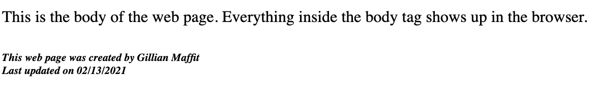

back to top
- The Superscript Tag
-
The supercript tag is used to contain characters that should be superscript such as the suffixes of dates or mathematical concepts like raising a number to a power.


back to top
- The Unordered List Tag
-
The unordered list tag creates a list and is used for a topic that doesn't have a certain order like a grocery list.
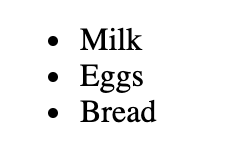

back to top
- The A Tag with Href Attribute
-
The a tag is how links are created, but adding the attribute called href how people go to the page you want when they click on the link.

back to top
- The Image Tag with Attributes
-
The image tag is used to add an image into the page, but needs to have the src attribute to tell the browser where it can find the image file
and alt attribute to provide a text description of the image which describes the image if someone cannot see it.

back to top
- The Table Row Tag
-
The table row tag is used to indicate where the start of each row is in the table.
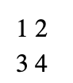
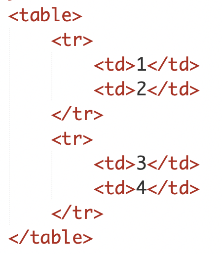
back to top
- Grouping Text
-
The div tag allows you to group a set of elements together in one block-level box. In a browser, the contents of the div tag will start on a new line.
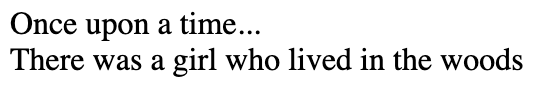

back to top
- Style Tag
-
The style tag can be added by using CSS in 3 ways inline, internal, and external. Inline is when the style tag is used as an attribute following a tag. Internal is
using the style tag inside of the head tag. External is used by using the link tag to an external CSS file. For the example below, I have shown the inline style being
used.

back to top
- Hex Codes
-
The hex codes are used within the color property that is seen in style tags. The hex code are six-digit codes that represent the amount of red, green and blue in a color,
preceded by a pound or hash # sign. This gives you a chance t get an exact color you want instead of using the name of a color. You can find hex codes in HTML color pickers
where you can move and adjust till you get a color you want.


back to top
- Font Family
-
The font family property allows you to specify the typeface that you would like to be used for any text inside the elements to which a CSS rule applies. This would be the font you
want to use in your webpage. You can find fonts through other sources as well like font websites if you want something very different.

back to top
- Border Width
-
The border width property is used to control the width of the border surrounding a text. It can be given in pixels or by using thin, medium, or thick. Percentages cannot be used with
this property, and you can also specify where you want to control the width. This means you can adjuest the border width on the right, left, top, or bottom.
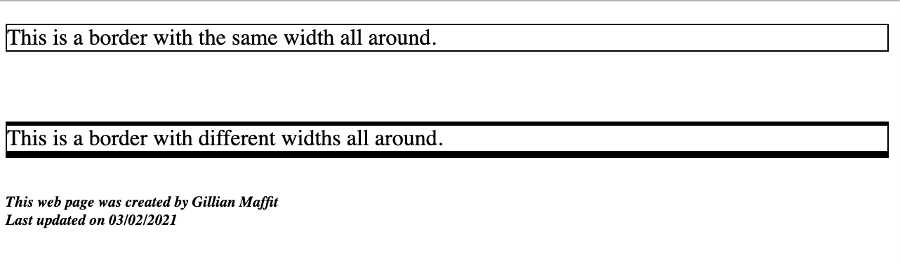

back to top
- List Style Type
-
This style attribute allows you to control the shape or style of a bullet point. There are certain words to follow this attribute, like in the example below
I wanted numbers to be infront of everything on the list, therfore I had to type decimal after the attribute to get just numbers before the list.
 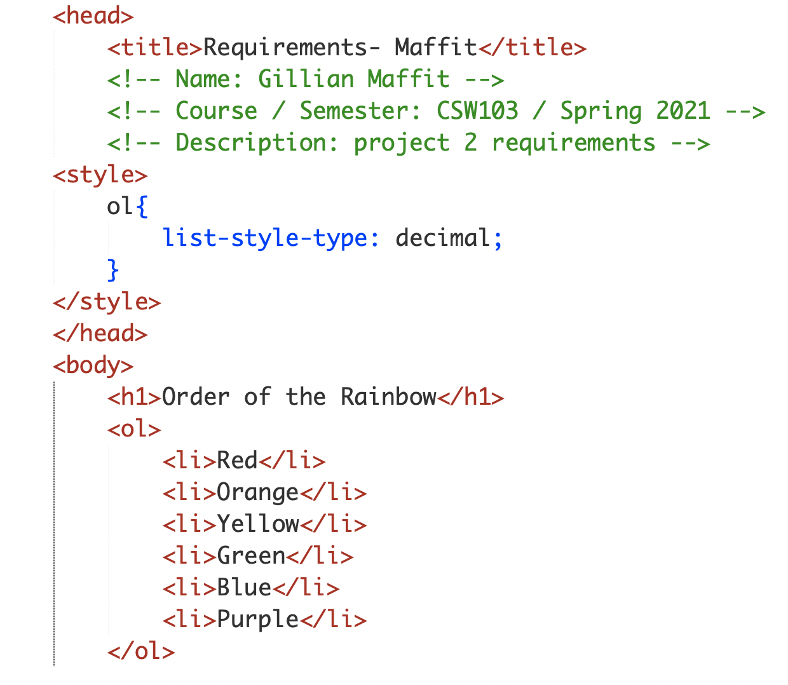
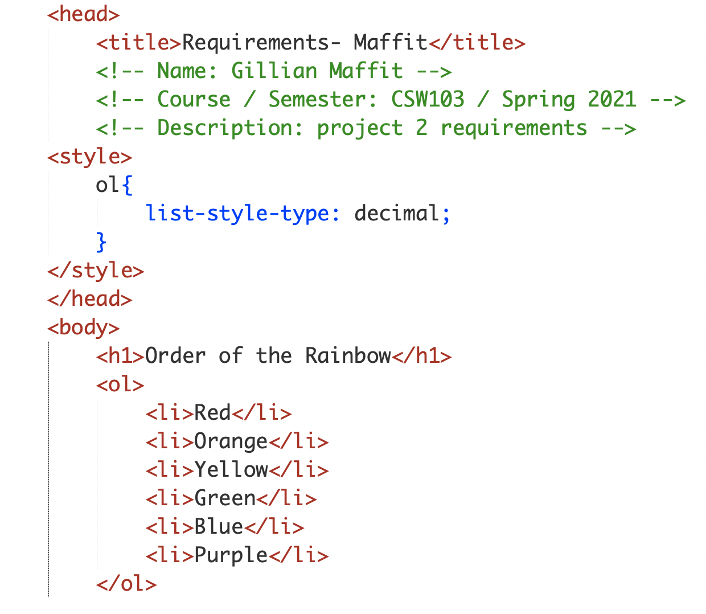
back to top
- Fixed Positioning
-
This is a type of absolute positioning , it positions the element in relation to the browser window. Therefore, when a user scrolls down the page, it stays in the exact same place.
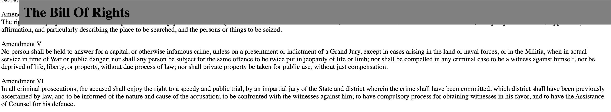

back to top
- Aside Tag
-
This tag is used inside of an article tag and inside the aside tag it should contain information that is related to the article but not essential to its overall
meaning, so it would makesense for it to be seperate from everything else on the page.
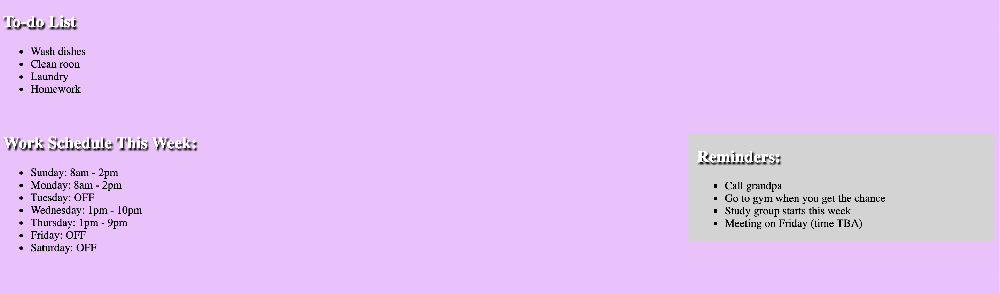
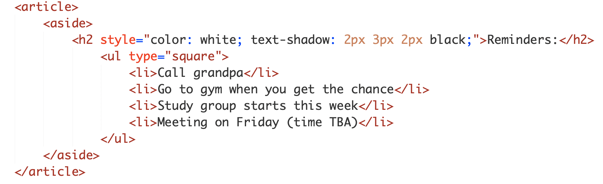
back to top
This web page was created by Gillian Maffit
Last updated on 03/02/2021